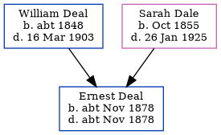

Ernest Deal cNov 1878 - c1878
[ Home ] | [ Calendar ] | [ Surnames Index ] | [ Errors ] | [ Family History ]The child of William Deal (a bailiff asylum farm) and Sarah Dale (a caretaker of bridge union workhouse), Ernest Deal, the first cousin twice-removed on the father's side of Nigel Horne, was born in Chartham, Kent, England c. Nov 18781 and baptised there on 23 Dec 1878.
He died c. Nov 1878 in Chartham2 and was buried there at St Mary on 30 Dec 18783.
Parents
- William was born c. 1848
- Sarah Ann was born in Oct 1855
Citations
- England & Wales births 1837-2006 - Findmypast
- England & Wales deaths 1837-2007 - Findmypast
- Kent, Canterbury Archdeaconry burials 1538-1988 - Findmypast
Media
England & Wales births 1837-2006 - BMD/B/1878/4/AZ/000148/227
England & Wales deaths 1837-2007 - BMD/D/1878/4/AZ/000099/367
Kent, Canterbury Archdeaconry burials 1538-1988 - GBPRS/CANT/D/95595875
Family Tree
Map
Generated by ged2site. Last updated on Jul 3, 2024